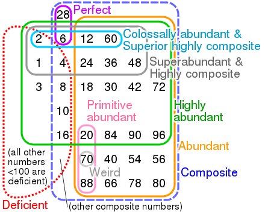

Throughout the article we use \(p\) to denote a prime number, and some times will state this but sometimes just leave it implicit.
question 1: what are the “most composite numbers?” Well, there are a lot of different classifications of numbers. 
But primorials are pretty good as far as having lots of divisors. I guess sticking more \(2\)’s into a number can sometimes be cheaper than adding another distinct prime factor though. So primorials aren’t really the best, they’re just a pretty decent example of a number with an outrageous number of divisors. Let \(p_n\) denote the n-th prime. The prime number theorem states that \(p_{n}\approx n\log n\). Let \(p_n\#\) denote the product of the first n primes (the “primorial”). Then, \(p_n\# \approx e^{n\lg n}\) [source: wikipedia] \(numdivs(n\#) = 2^{n}\) because \(n\# = 2\cdot 3 \cdot 5 \cdot \cdots \cdot p_n\).
so I guess \(2_{n} \ll e^{n\lg n}\), but is still exponential.
Sounds like “collosally abundant numbers” are worth looking out for though.
Some facts about \(\phi\)
Let \(\phi(n)\) denote the number of positive integers \(k<n\) which are relatively prime with \(n\). For example, \(\phi(p)=p-1\). This is called the Euler Toitent function.
\(\phi(n) \geq \Omega(n / \lg\lg n)\). Ok, so \(\phi(n) \geq \Omega(n /\lg n)\) follows immediately from the prime number theorem; but that’s obviously very weak. I think the stronger bound can maybe be derived from Merten’s theorem?
Merten’s Theorems
Theorem. \[\sum_{p<n, p \in\text{prime}} \frac{1}{p} \approx \lg\lg n\]
Proof.
We use “dyadic decomposition”, a neat strategy. Consider the sum of reciprocals of primes on an interval \((e^i,e^{i+1})\). We can see that, up to a factor of \(e\), all these numbers are about \(e^i\). There are about \(\frac{e^i}{i}\) of these numbers (the log in the PNT is a natural log). Thus, their sum is about \(\frac{1}{i}\). This yields \[\sum_{p<n, p \in\text{prime}} \frac{1}{p} \approx \sum_{i=1}^{\lg n} \frac{1}{i} \approx \int_{1}^{\lg n} \frac{1}{x} dx \approx \lg \lg n.\]
We remark that we don’t need PNT to prove Merten’s theorem, but we use it because it’s easier this way.
Corollary. \[\prod_{p\leq n,p \in\text{prime}} 1- \frac{1}{p} = \frac{1}{\Theta(\log n)}.\] \[\prod_{p\leq n,p \in\text{prime}} 1+ \frac{1}{p} = \Theta(\log n).\]
Proof. These theorems are basically just the same thing, but reciprocalled; thus we will just establish one of them.
Now, to get these other Merten’s theorems, we can actually just observe that they are the exponentiated version of the other identity we proved. In particular,
\[\log \prod_{p\leq n, p\in\text{prime}} 1+\frac{1}{p} = \sum \log 1+\frac{1}{p} \approx \sum \frac{1}{p} \approx \lg\lg n.\]
Here we use the extremely useful approximation \(\log (1+x) \approx x\) when \(x\approx 0\).
some conjectures:
\(\sum_{j=1}^m \frac{1}{\lg\lg j} = \frac{m}{\lg m}\) \[\sum_{k\leq n} \frac{\phi(k)}{k^2} = \lg n.\]
some other interesting things
\[\int \frac{1}{\ln x} = li(x) = \Theta(\frac{x}{\log x})\] where \(li\) denotes the logarithmic-integral function.
A super cool and useful fact that I fully believe but do not know a proof of is that \[\sum_{k\leq n} \phi(k) = \frac{3}{\pi^2} n^2 +O(n\log n).\] ref:oeis Now, I’m starting to feel really like the natural state of numbers is to be fairly co-prime. So, while this is not necessarily surprising, it is SUPER COOL.
One consequence of this is that it resolves my conjecture which I stated above. In particular, \[\mathop{\mathrm{\mathbb{E}}}[\phi(k)/k] \geq \sum_{k\leq n}\frac{\phi(k)}{n^2} \geq \Omega(1).\] WOW! And for dyadicy-reasons or \(e\)yeiy reasons, we get \(\sum_{k\leq n} \frac{\phi(k)}{k^2} \geq \Omega(\lg n)\).
A remark, for fellows that care about the constants: I had some kind of complicated argument for why \(\mathop{\mathrm{\mathbb{E}}}[\frac{\phi(k)}{k}] = \prod_{p\leq n} 1-\frac{1}{p}+\frac{1}{p^2}\). Then, I used Euler products to compute this. You factor the dude, and if \(\alpha=\frac{1+\sqrt{3}i}{2}\), we get that the product is equivalent to \[\prod \alpha-\frac{1}{p} \prod \overline{\alpha}-\frac{1}{p} = \frac{1}{Li_1(\alpha)}\frac{1}{Li_1(\overline{\alpha})} = \frac{9}{\pi^2}.\] But that said, I’m not in it for the constants, so the other one works fine for me :).
divisor function
For any \(\epsilon>0,\) the number of divisors of \(n\) is \(o(n^{\varepsilon})\).
some potentially helpful resources:
SO prod Wikipedia!!!